Creating a personal website on GitHub
Steps in order to create a website
- Create a GitHub account.
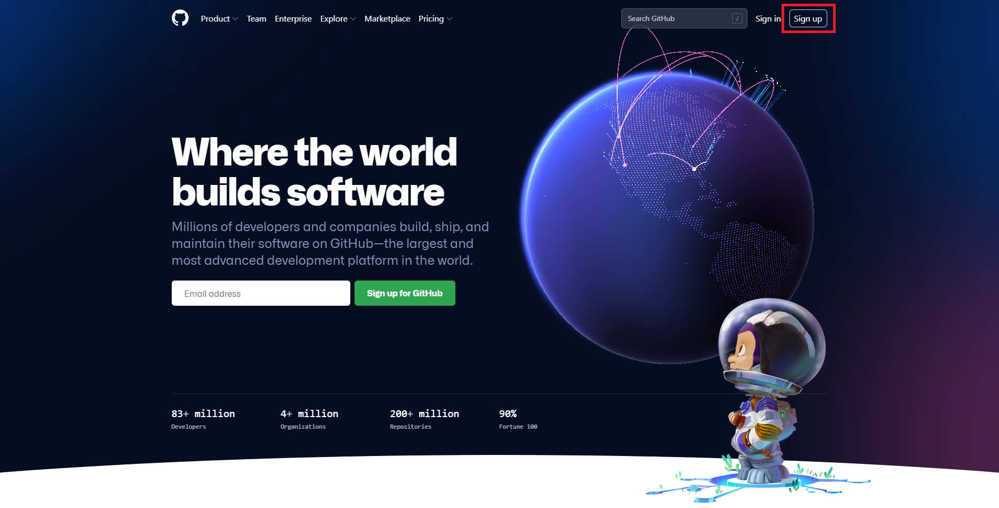
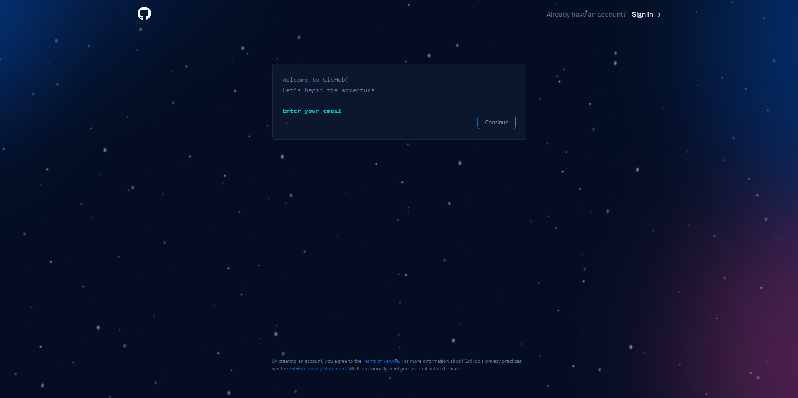
- Once you've finished creating your account, go ahead and click on the profile icon on the top right and select the repositories tab.
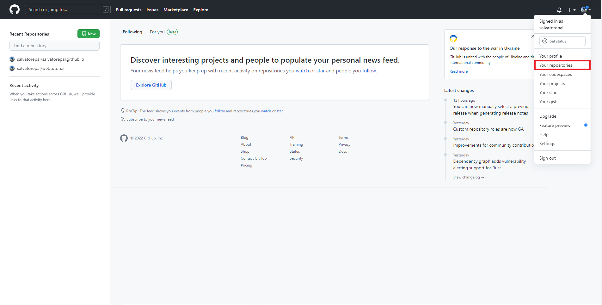
- Click on the green button that says "New".
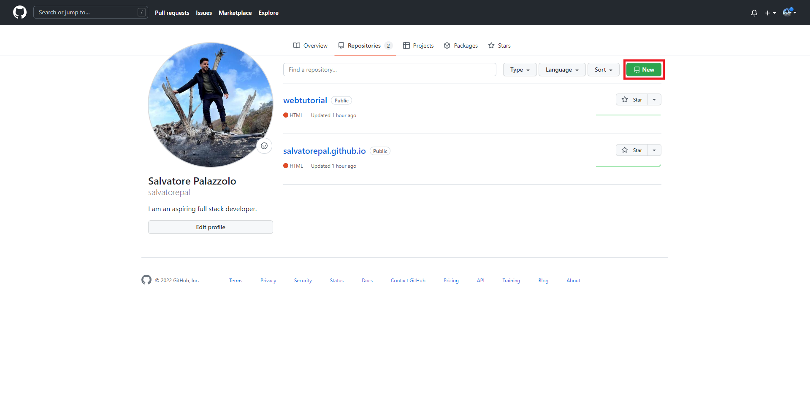
- Now you will be able to create a name for your website as well as leaving a description (Optional). Once you've given your website a name, click "Create Repository" at the bottom.
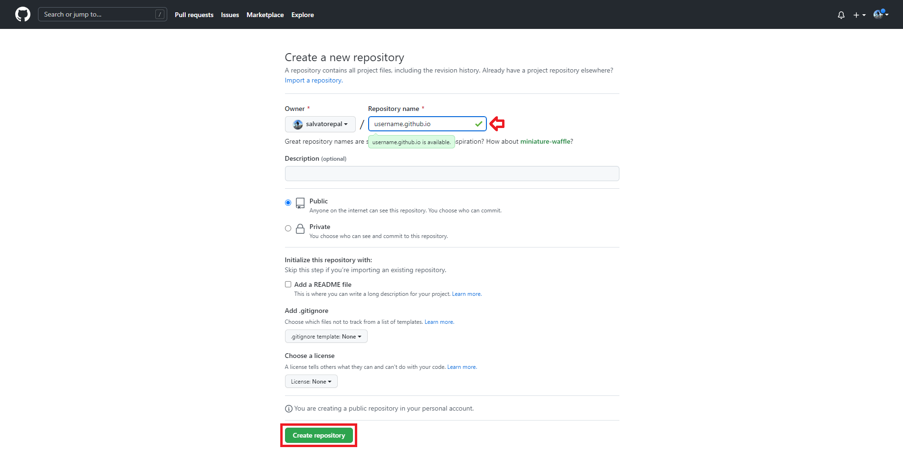
- Here you will be decide between creating a new file on GitHub or uploading a file directly.
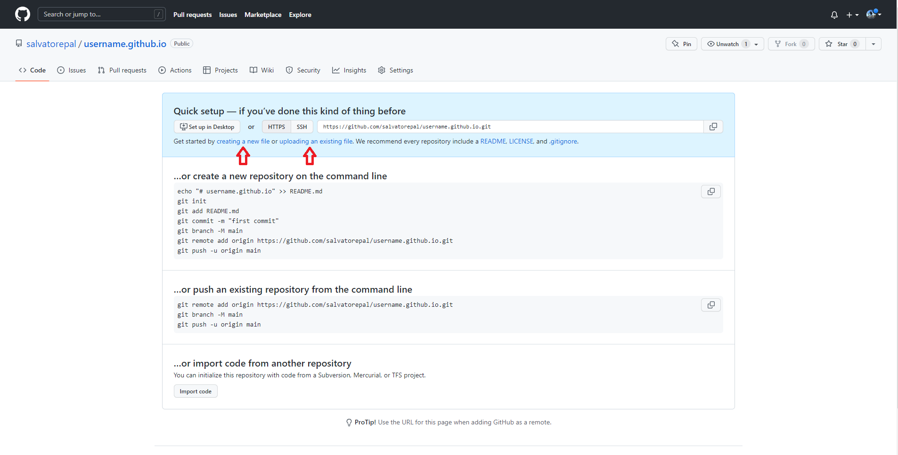
- You may write the code directly into GitHub. Here's the html code template you will be using. Just replace "Username" with whatever you desire.
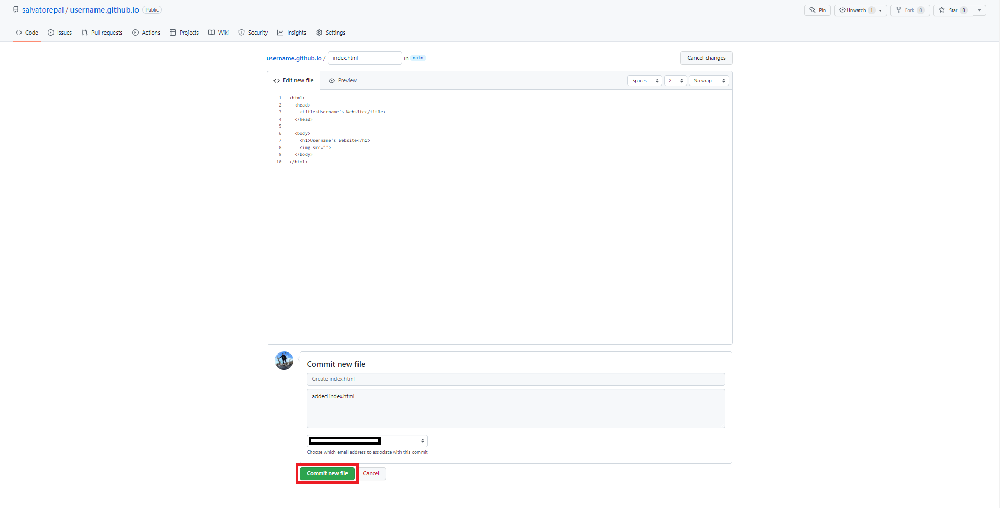
- But for this tutorial we will be uploading a file.
- Now, simply drag over the html, css, & image file(s) you wish to upload and click "Commit Changes" on the bottom.
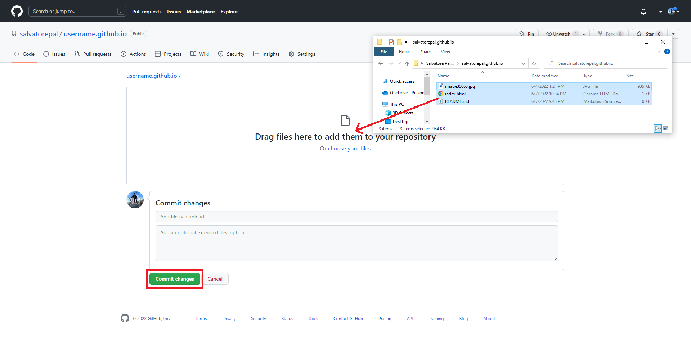
- Next, click on the Settings tab and then click Pages.
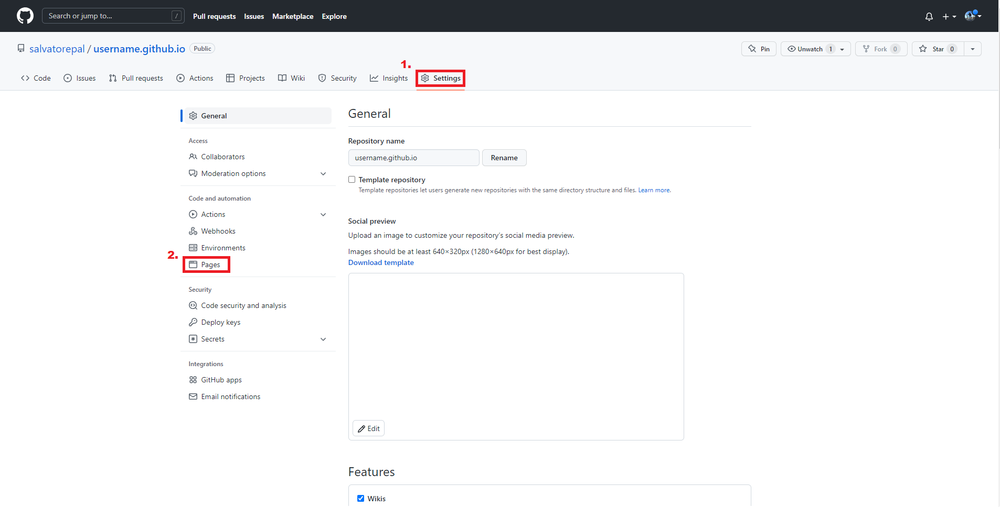
- From there you will click on the drop down menu under Sources and select the MAIN branch.
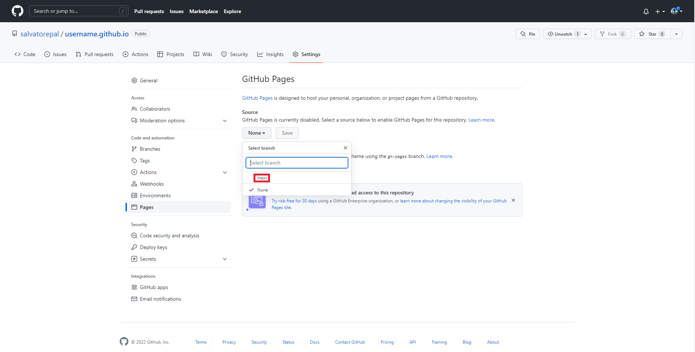
- Finally, just type your website into the browser (EX: "username.github.io") & it should appear. Voila! Your very own website. :)
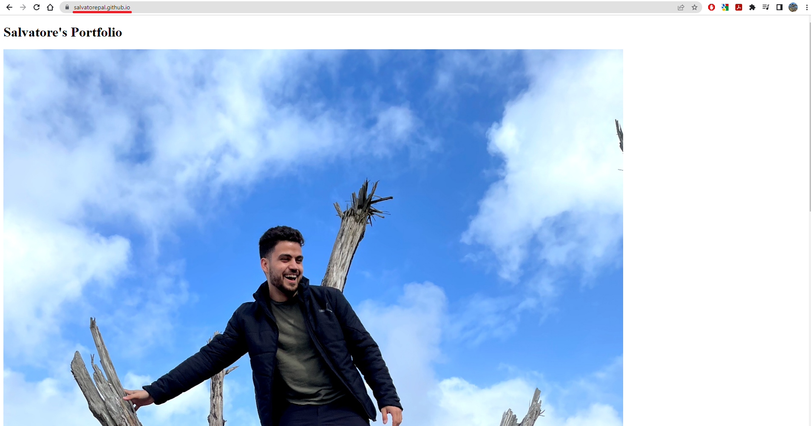
Click here to begin!